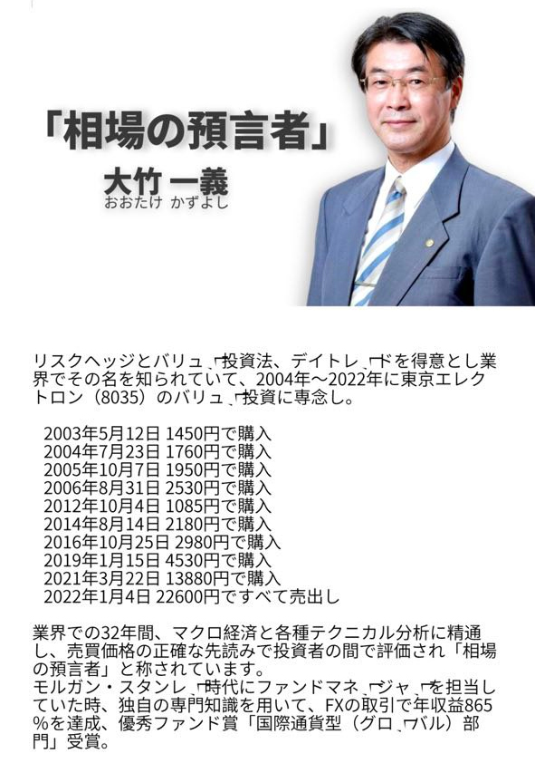

皆さんこんにちは、石原さとみです。
「投資の価値は、無償で共有することにあります。」
俳優として、私はスポットライトを浴びることが大好きですが、私の俳優としてのキャリアの裏には、あまり知られていない投資の物語があります。
私が投資を始めたのは、エンターテイメント業界はストレスが多く不確実な業界だからです。 彼らはステージでは輝いていますが、その報酬は必ずしも彼らのライフスタイルと一致するとは限りません。 そこで私は他の収入源を探し始めました。
偶然、私は投資の専門家に出会い、株式市場と債券市場の基本を教えてもらいました。 私はこれらの投資手段を調査し、市場動向についてさらに学び始めました。 専門家の指導のもと、徐々に投資スキルを習得していきました。
継続的な学習と実践を通じて、投資は思っていたほど複雑ではないことがわかりました。 私たちは、投資がお金を管理し、将来に責任を負う方法であることを知っています。 それから数年間、私は稼いだお金をすべて投資し、ゆっくりと富を築きました。
私がどのようにして一歩ずつカムバックしてきたのかを目撃するために、私の投資経験を毎日更新していきます。
私は最近、義理の長兄である大竹一義（元モルガン・スタンレーのファンドマネージャー）と共同で「投資成長クラブ」を設立しました。私たちのクラブに入会すると、毎日少なくとも3つのトップ投資のヒントを無料で得ることができます。私の最も信頼できる女性アシスタント、LINEを追加して、私の投資クラブに参加し、投資と収益性について一緒に学びましょう。気に入らなければ、理由も言わずに退会できます。

私LINEを追加でいただけますか？LINEのグループで株式選択のアプローチや技術を定期的に共有します。なお、参加は自由であり、参加者の情報は料金をいただかずに、外部には公開しません。
大竹一義を詳しく知る方法

「桁違いのお金持ちになるには株式の所有は避けて通れない」
お金が大量に共有されている現代は、インフレが毎年2％進行してもおかしくない。これは35年で物価が2倍になり、現金の価値は半減する計算です。銀行にお金を預けているだけの人と、有効に資産運用している人との間では、ますます経済格差が広がることになり、何もしない人は機会損失が大きすぎる時代となっているんですよね。
さらに、株の現物と仮想通貨の現物は似ている部分も多いので、株の知識を持って参入するのであれば大賛成です。今後は仮想通貨が主流になっていくと思いますので、今からよく勉強しておくのがいいですね。
※必要な場合は、私を追加して、無料で投資共有グループに参加してください
はい、月に30〜50％の利益を上げることは実際には難しくありません。 ！
大多数の株主や友人がこの情報を周囲の個人投資家と共有できることを願っています。大多数の善良な友人のために、世界中から専門家を集めた純粋に無料のコミュニケーション グループが設立されました。より多くの個人投資家が次の株式市場への投資で支援を受けることができます。大多数の投資家のために、より多くの投資ユーザーが次の株式市場への投資で助けを得られるように、全国各地から民間の専門家を集めた無料の交換グループも設立されました。交流グループ。をクリック。初心者の方は、この機会を利用して、正しい投資習慣を身につけ、他の人から成功の秘訣をゼロコストで学ぶことができます。あなたが初心者や小ブルジョワジーであれば、この無料体験をお見逃しなく
投資家のそれぞれにとって、適切な資本管理の方法を見つけることは非常に重要です。
市場環境が悪いほど、正しい概念を教えてくれる人が必要です。私はグループで、市場でどのように一歩一歩お金を稼いできたか、いくつかの概念、技術、そして過去の精神的な旅などを共有します。


※必要な場合は、私を追加して、無料で投資共有グループに参加してください
お弟子さんからのトレード報告
このグループの目的は、株式市場初心者が正しい投資理念を身につけることをサポートすることです。
私にとって、株式市場から得られる利益はこれらの利益に比べて格段に多いのです。利益を求めているわけではありません。
また、このグループは異なる分野の友人との交流の場でもあります。私はメンターまたは友人を探している投資パートナーをサポートし、共有の価値観を持つ人々を集めることで、健全な議論を通じて投資を楽しくし、生活をより良くすることを願っています。
また、資産評価を達成し、より良い投資ストラテジーを得るためにお手伝いをします。
もし私の共有が役立つと思われる場合は、ぜひ「いいね」ボタンを押してください。メッセージやフォローも大歓迎です。同じ志を持つ仲間の方々にもぜひ気軽に連絡をいただき、オンライン学習の進捗を共有しましょう！
※必要な場合は、私を追加して、無料で投資共有グループに参加してください